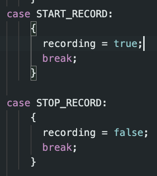

Lab 01: The Artemis Board and Bluetooth
Objective
The purpose of this lab was to setup and familarize ourselves with the Arduino IDE and Artemis board. The first part was to run example code from the Artemis library. The second part involved implementing and testing Bluetooth with the board. This was done using Python in Jupyter Lab and the Arduino IDE.
Part 1: Running example files
Prelab
The prelab involved installing the Arduino IDE and downloading the correct libraries for the SparkFun RedBoard Artemis Nano.
Lab Tasks
The lab tasks were to run 4 different example sketches (code blocks).
Task 1: Blink it Up
This example has the microcontroller blinking an LED on and off in 1 second intervals.
Task 2: Serial
This example had the serial monitor echo whatever you typed in the message.
Task 3: AnalogRead
This example had a variety of data printing from the microcontroller, but we were focused on the temperature reading. We changed the temperature by holding the board to heat it up.
Task 4: MicrophoneOutput
This example had the microphone measure the frequency of a noise. The noise in this case was whistling.
Part 2: Bluetooth
Prelab
The prelab setup involved installing the proper software and packages to interface with the RedBoard. We had to install Python 3 and pip. Next, we had to set up a virtual environment. We started by installing venv:
python3 -m pip install --user virtualenv
Then, navigating to a project directory that we created, we create the virtual environment (venv):
python3 -m venv FastRobots_ble
We would activate or deactivate the venv with these lines, respectively:
source FastRobots_ble/bin/activate
deactivate
With the venv active, we installed the necessary packages:
pip install numpy pyyaml colorama nest_asyncio bleak jupyterlab
Finally, to run the jupyter lab, we used this line:
jupyter lab
Codebase
The codebase is separated into 2 parts, the arduino code which commands the microcontroller and the python code which interfaces with the microcontroller from a laptop/pc. The code sets up both the laptop and the microcontroller as a receiver and a transmitter to have a 2 way connection.
The arduino code sets up the Bluetooth service using BLEService which initializes Bluetooth connectivity with a unique id as input. The BLEService is comprised of BLExCharacteristics which define how different types of data (string, int, float) are handled by the microcontroller. There are a host of functions the microcontroller can do such as write values and read values. These functionalities can be modified and leveraged by writing custom commands. It is important to note that these custom commands must be defined on both the microcontroller and laptop/pc side. The commands are read in via the bluetooth connection and parsed to complete the correct functionality.
The python code sets up the Bluetooth service on the laptop side. It's connection
to the microcontroller is defined by its connection.yaml file which defines the artemis address
(MAC address of the microcontroller), the unique id inputted into BLEService, and the unique ideas for each
characteristic defined on the arduino side. This file allows the two to communicate with each other. The
python code includes a variety of functions to send commands and accompanying data to the microcontroller.
Lab Tasks
The main tasks of this lab was to set up Bluetooth connectivity and then write a host of functions to test the communication between the microcontroller and laptop. The first step was establishing a connection. (Note: the photos with a light background are from the laptop code and the dark background is the arduino code)
Task 0: Establishing Connection
To establish the connection, first we had to get the MAC address of the
microcontroller by running the ble_arduino.ino file which printed the MAC address. We then
replaced the artemis_address in the connection.yaml file in the python code. Next,
we generated a uuid in the jupyter notebook using:
from uuid import uuid4
uuid4()
This generated a uuid that we placed in the connection.yaml file and the
BLE_UUID_TEST_SERVICE in the ble_arduino.ino file.
After burning the sketch onto
the microcontroller and running the demo code in the jupyter notebook, we were able to establish a
connection.
Task 1: ECHO
The 1st task was to implement the ECHO command. This basically takes a string from the laptop side, sends it to the microcontroller, the microcontroller modifies the string, and then sends it back to the laptop.
On the laptop side, we just send the command and receive the string.
We implement the modification in the arduino file.
It is important to note that whenever a new command is created, we define it in both the python and arduino files.
Task 2: GET_TIME_MILLIS
The 2nd task was similar to the first, but this function takes in no input data from the laptop side and simply gets the current time in milliseconds from the microcontroller in a formatted string.
Task 3: Notification Handler
The 3rd task was to set up a notification handler that handles any received data
from the laptop side sent from the microcontroller. Without notify, you would need to explicitly receive the
data using one of the ble.receive[datatype] functions.
Task 4: Constant Polling of Time
The 4th task was to have the microcontroller constantly send time data to the laptop and have the laptop notification handler process the time data. The purpose of this task was to see how fast messages could be sent if they were sent in succession by the microcontroller.
To implement this, decided to add the time polling in the main loop of the
microcontroller which runs when it is connected via bluetooth.
We created a flag variable to start and stop the recording and made the corresponding commands.

On the laptop side, we just ran the Start or Stop command and had the notification handler print out the
time stamps.
Here we see that there seems to be a delay between a few of the time data points sent. As a rough estimate,
we see that 2-3 consecutive time data points are sent before there is a lag. Taking the first 30 sent data
points, we see that the data points were sent over a period of 226ms. This gives an average data transfer
rate of
1msg/7.53ms.
Task 5: SEND_TIME_DATA
The 5th task was a modification the 4th task. Instead of constantly sending time
data, the microcontroller would still constantly generate time data, but it would store the data in an
array.
When the
array filled up, we decided to simply stop recording time stamps. We made it so that the array is "reset"
every time we call the START command (by setting counter = 0) to signify the start of a new stream of time
data. We did this to
simplify the array usage. In the future, we could add a message that let's the laptop know when the array is
filled as well.
We then created a function SEND_TIME_DATA that would send that array of data.
We then run the commands on the laptop to record and send the data.
Performing a similar analysis to Task 4 with the 30 data points, we see that they were sent over a period of
13ms. This gives an average data transfer rate of 1msg/0.43ms.
Task 6: GET_TEMP_READINGS
The 6th task was an extension of the 5th task where we would generate an array of
corresponding
temperature readings (in Fahrenheit) in parallel with the time data. We then created the
GET_TEMP_READINGS function to send both the temperature and time data. It was important to
ensure that each data point had the temperature and the corresponding time. The loop is the same loop as the
picture in Task 5. The GET_TEMP_READINGS function is defined here. It is very similar to SEND_TIME_DATA.

The results when calling this function on the laptop are as such.
Task 7: Efficiency of Task 4 vs. Task 5
Task 4 collects the time data and tries to send it immediately while Task 5
collects it "in the background" and waits to send it. They two methods have their own trade offs. Task 4's
methodology is important for when you need a constant flow of updated readings whereas Task 5 would struggle
with that as a command needs to be called to receive the data (calling this command repeatedly to try to
mimic Task 4's behavior is ill advised because of the inefficiencies of the array storage method and
traversing it). On the other hand, Task 5's method allows for a faster transfer rate which means that the
data can be processed by the laptop at a faster rate as long as you don't need a constant stream of new
data.
If the Artemis board has 385 kB of RAM and assuming we are using Task 5's methodology, we can calculate how
much data can be stored without running out of memory(ignoring the RAM taken up by other functions on the
board). If we assume each data point is 16-bits and the microcontroller runs at 150 Hz (150 cycles/second),
we consume 2400 bits/second. 385 kB = 3,080,000 bits. Dividing this by the rate that we consume, we get
1283.3 seconds. So we can store 1283.3 seconds worth of data before we run out of memory.
Discussion
I've learned a basic use of the BLE library. This will allow me to gather sensor data and transfer it in future labs. It has also showed me the pros/cons of constantly polling data vs. storing it to send. The only notably challenge was picking a design for the looping method to gather the time data.